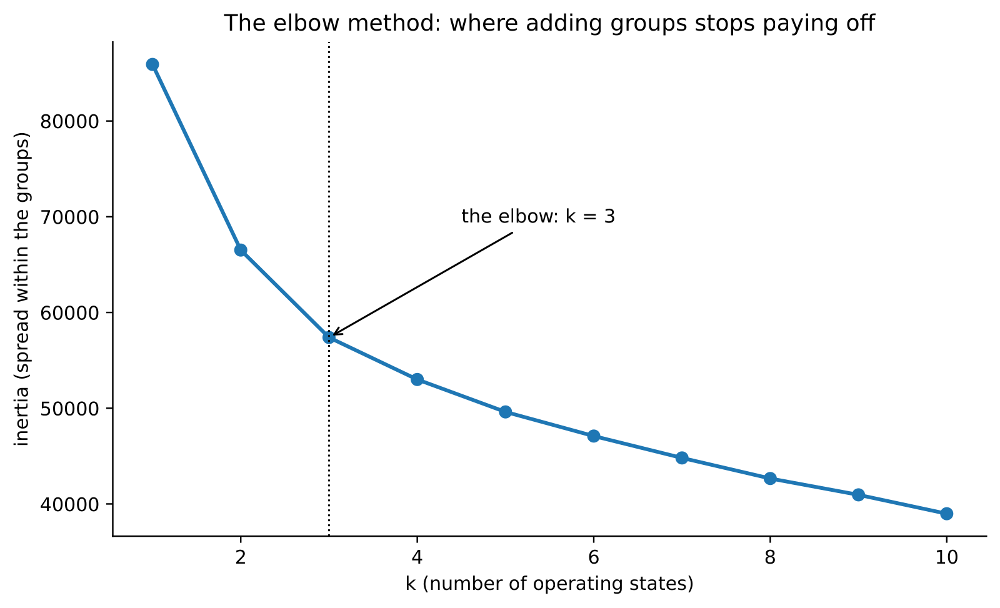
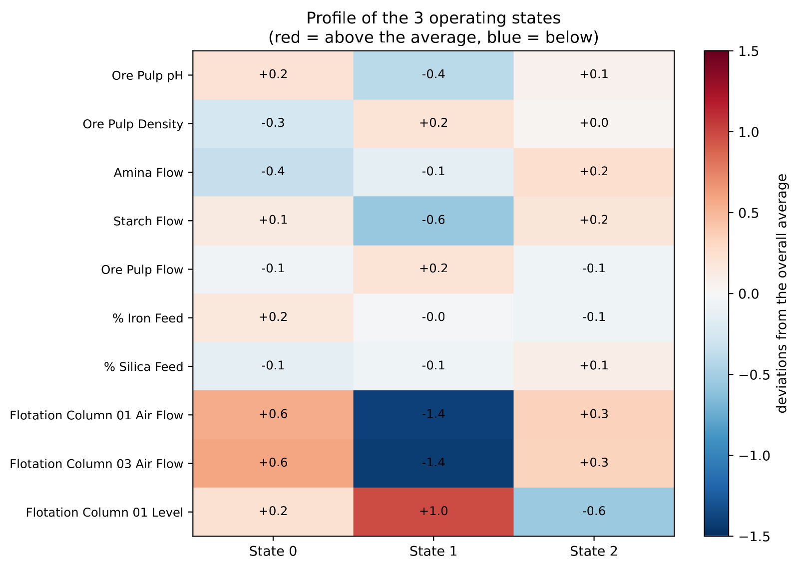
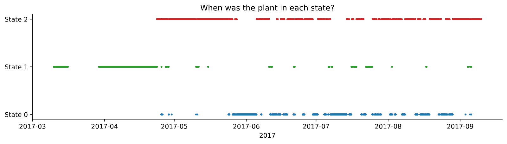
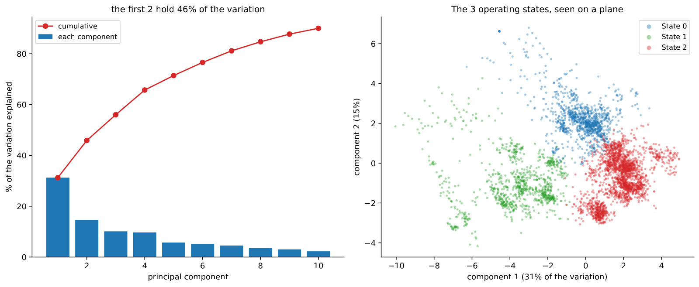

In 30 seconds
- k = 3. Without looking at the target, the plant separates on its own into three operating states.
- One of them disappears in May. State 1 takes 100% of March, 78% of April and 2% of May.
- There lies the cause of everything before. The models were trained on one plant and tested on another.
- The states have different qualities: 1.85 · 2.60 · 2.46 of mean SiO₂. The column air separates them.
- PCA confirms the structure: 46% of the variation in two axes, aeration and levels.
What this module solves
Modules 2 to 8 measured that it cannot be predicted. None explained why.
Here the cause is looked for without using the target. That is unsupervised learning: finding structure in the data without telling the algorithm what to look for.
And the missing explanation appears, which is not about the model but about the plant.
Before the theory: a toy example
Six hours, a single variable: the air flow of one column.
240 245 250 290 295 300By eye there are two groups. We are going to find them by measuring, and decide along the way how many there are.
Step 1. A single group
If everything is one group, its centre is the mean.
centre = (240 + 245 + 250 + 290 + 295 + 300) / 6 = 1620 / 6 = 270The inertia is the sum of the squared distances from each point to its centre.
inertia = 30² + 25² + 20² + 20² + 25² + 30²
= 900 + 625 + 400 + 400 + 625 + 900
= 3850Step 2. Two groups
The three low ones on one side and the three high ones on the other.
group A: 240, 245, 250 centre 245 inertia = 25 + 0 + 25 = 50
group B: 290, 295, 300 centre 295 inertia = 25 + 0 + 25 = 50
total inertia = 100From 3850 to 100. The inertia falls to a fortieth with a single division.
Step 3. Three groups
Splitting group A in two:
group A1: 240, 245 centre 242.5 inertia = 6.25 + 6.25 = 12.5
group A2: 250 centre 250 inertia = 0
group B: 290, 295, 300 centre 295 inertia = 50
total inertia = 62.5Step 4. The elbow
| Groups | Inertia | What dropped |
|---|---|---|
| 1 | 3850 | reference |
| 2 | 100 | 3750 |
| 3 | 62.5 | 37.5 |
The elbow is at 2. Going from one to two groups removes 97% of the inertia. Going from two to three removes almost nothing.
Adding groups always lowers the inertia, until there is one group per point and an inertia of zero. That is why the minimum is not chosen: you choose where the curve stops plummeting.
Step 5. What just happened
The algorithm knew nothing about silica, or quality, or specification. It only grouped hours that resembled each other.
That is what makes it useful here. If groups with different qualities appear, those groups are a finding and not a construction. Nobody put them into the data.
Glossary
10 terms, in plain words
- Unsupervised learning. Looking for structure in the data without using the answer.
- Clustering. Sharing the rows out into groups of similar rows. In Spanish, agrupamiento.
- k-means. The most common method. It places k centres and keeps moving them until they settle.
- Inertia. The sum of squared distances from each point to its centre. It always drops when groups are added.
- Elbow method. Drawing the inertia against k and looking for where the curve bends.
- Operating state. A group of hours in which the plant behaved in a similar way.
- PCA. Principal component analysis. It looks for the combinations of variables that explain the most variation.
- Principal component. Each of those new axes. The first is the one that captures the most variation.
- Explained variance. What percentage of the total variation each component gathers.
- Concept drift. The relationship between variables and target changing over time. In Spanish, deriva de concepto.
Step by step
Step 1. Scale, because here distances rule
k-means measures distances. Without scaling, a flow of 300 weighs a hundred times more than a pH of 9.8, and the groups come out decided by the units.
Step 2. Use process variables only
The target is left out on purpose. If it went in, the groups would come out separated by silica by construction and would prove nothing.
Leaving it out, the mean silica of each group is an independent check.
Step 3. Choose k with the elbow
k-means is run for several values of k and the inertia is drawn. Where the curve bends, there is the number of states.
Step 4. Read the profile of each state
A group number says nothing. You have to look at the mean values of each variable inside each group and translate them into plant language.
Step 5. Look at when each state ruled
This is the pass that resolves the project. The groups are placed in time, month by month.
Step 6. Confirm with PCA
k-means could be inventing groups where there is only a continuous cloud. PCA projects the data onto two axes and lets you see them.
The code, in parts
Step 1. Scale and look for the elbow
from sklearn.cluster import KMeans
from sklearn.preprocessing import StandardScaler
X = StandardScaler().fit_transform(data[base])
for k in range(1, 11):
print(k, KMeans(n_clusters=k, n_init=10, random_state=0).fit(X).inertia_)line by line, 4 entries
StandardScaler().fit_transform(...)- Fits and applies in one step. No leak is possible here, because nothing is being predicted.
KMeans(n_clusters=k)- Places k centres and moves them until they stop changing.
n_init=10- Repeats ten times with different starts and keeps the best. k-means depends on the starting point.
.inertia_- The sum of squared distances to the centres. The trailing underscore marks what the model learned when fitting.
Perfil de cada estado (unidades reales):
Ore Pulp pH Ore Pulp Density Amina Flow Starch Flow % Silica Feed Flotation Column 01 Air Flow % SiO2 concentrado horas
cluster
0 9.85 1.66 458.87 2999.39 13.72 296.46 1.85 1083
1 9.62 1.69 475.82 2328.70 14.20 239.11 2.60 935
2 9.79 1.68 509.05 3045.81 15.35 290.30 2.46 2073
Step 2. Read the three states

| State | Hours | Column 1 air | Amine | Starch | SiO₂ feed | SiO₂ concentrate |
|---|---|---|---|---|---|---|
| 0 | 1,083 | 296 | 459 | 2,999 | 13.7 | 1.85 |
| 1 | 935 | 239 | 476 | 2,329 | 14.2 | 2.60 |
| 2 | 2,073 | 290 | 509 | 3,046 | 15.4 | 2.46 |
Translated into plant language:
- State 0, the good run. High air, clean feed, and the best quality in the history with 1.85% silica.
- State 1, low air. The air flow drops to 239 against the 290 and 296 of the other two, and the starch drops too. Quality goes to 2.60.
- State 2, fighting. The feed arrives dirtier, with 15.4% silica, and the amine rises to the maximum, 509. The plant compensates and stays at 2.46.
The groups came out of process variables, without looking at the silica. That the three mean qualities differ is the check that the states are real.
Step 3. Place the states in time
por_mes = etiquetas.groupby([data.index.to_period("M"), "estado"]).size().unstack(fill_value=0)
print((por_mes.T / por_mes.sum(axis=1)).T.mul(100).round(0).to_string())line by line, 3 entries
.to_period("M")- Turns each date into its month, so the data can be grouped by month.
.unstack(fill_value=0)- Turns the states into columns. Months without that state are left at zero.
(tabla.T / tabla.sum(axis=1)).T- Turns the counts into a percentage of each month. The double transposition is so the division goes by rows.
estado 0 1 2
date
2017-03 0 100 0
2017-04 2 78 21
2017-05 20 2 78
2017-06 42 4 55
2017-07 45 15 40
2017-08 38 1 61
2017-09 1 6 93
Step 4. Confirm with PCA
from sklearn.decomposition import PCA
pca = PCA(n_components=2).fit(X)
print(pca.explained_variance_ratio_.round(3))line by line, 3 entries
PCA(n_components=2)- Looks for the two axes that capture the most variation, combining all the columns.
.explained_variance_ratio_- What fraction of the total variation each axis gathers.
.components_- The weight of each original variable in each axis. It is what lets you give them names.
Variables que mas definen la componente 1:
Flotation Column 06 Air Flow 0.305658
Flotation Column 07 Air Flow 0.305294
Flotation Column 01 Air Flow 0.299694
Flotation Column 01 Level 0.297969
Variables que mas definen la componente 2:
Flotation Column 05 Level 0.404971
Flotation Column 04 Level 0.400331
Flotation Column 07 Level 0.386301
The first two axes hold 46% of the variation: 31% the first and 15% the second.
The first is dominated by air flows, so it is aeration. The second, by column levels. Two operating knobs, found without telling the method what to look for.
The result, measured
What we expected. Fuzzy groups, or groups separating shifts or days of the week. The usual thing when clustering process data.
What came out. Three states with different qualities, and one of them with an expiry date.
| Month | State 0 | State 1 | State 2 |
|---|---|---|---|
| March | 0% | 100% | 0% |
| April | 2% | 78% | 21% |
| May | 20% | 2% | 78% |
| June | 42% | 4% | 55% |
| July | 45% | 15% | 40% |
| August | 38% | 1% | 61% |
| September | 1% | 6% | 93% |
What it means. State 1 goes from 100% of the hours in March to 2% in May. The plant changed the way it operated between April and May, and did not go back.
That state is characterised by low air, 239 against 290 and 296. Somebody raised the air in the columns, and since then the plant operates in another way.
Why this explains modules 2 to 8
The project's training cut is 1 August. March and April, which are 100% and 78% state 1, are inside the training set. September, which is 93% state 2, is inside the test set.
The models learned the relationships of one plant and were examined on another. That explains three things measured earlier:
- The spread between folds of module 4, from −0.011 to −0.271. Each fold falls on a different mix of states.
- The drift that module 10 is going to measure month by month.
- Why retraining fixes nothing, measured in module 8. The problem is not that the model ages, it is that there is no stable relationship to learn.
The finding, in one sentence
Unsupervised learning found the cause that eight modules of supervised learning could not see, and it did so without using the target a single time.
What this module leaves open
The project still has to be closed. The technique not yet used, neural networks, remains to be tried, and all of this has to be turned into a defensible recommendation.
Module 10 does both, and measures the drift this module has just explained.
Watch out
- The inertia always drops when groups are added. With k equal to the number of points it is zero. That is why the elbow is what you look for, not the minimum.
- Without scaling, the units decide the groups. A flow of 300 crushes a pH of 9.8.
- The target is left out of the clustering. If it goes in, the groups separate by silica by construction and the check is lost.
- k-means depends on the start. With
n_init=1it can land on a bad solution. Ten starts is the reasonable minimum. - k-means always returns k groups, whether there is structure or not. The elbow and the PCA projection are the two checks that the groups exist.
- A change of regime is not fixed by retraining. If the relationship changed, the old model was not out of date: it was describing another plant.
Metallurgical bridge
The three states are three operating campaigns, and any metallurgist would recognise them without k-means if they had the setpoint log in front of them. The problem is that the log is not in the file.
State 1 is a circuit with low aeration: less air carries less froth, selectivity improves in theory but capacity drops, and the silica goes to 2.60. State 2 is the plant compensating for dirty feed. 15.4% silica comes in against 13.7%, and the amine is raised to 509 to carry more gangue. Even so the concentrate comes out at 2.46.
And the change from April to May is an operating decision, not a natural phenomenon. Somebody raised the air and left it raised.
Modelling six months of that plant with a single model is like calibrating with standards from two different preparations. An average curve comes out, and it describes neither of the two well.
Review
Why is the k with the lowest inertia not chosen?
Because the inertia always drops when groups are added, down to zero with one group per point. It is a metric that cannot choose.
In the toy example it goes from 3850 with one group to 100 with two, and to 62.5 with three. The first division removes 97% and the second almost nothing. The elbow is that point where the curve stops plummeting, and it marks how many groups there really are. On the real data the elbow is at k = 3.
Why is the target left out of the clustering?
So that the mean silica of each group serves as an independent check.
If the target went in among the variables used for clustering, k-means would separate the hours by silica and afterwards we would find, with no surprise at all, that the groups have different silicas. It would be circular.
Clustering with process variables only, the three means come out 1.85, 2.60 and 2.46. That is new information. The operating conditions the algorithm told apart have real consequences for quality.
State 1 goes from 100% of March to 2% of May. What does that mean for the project?
That the models were trained on one plant and examined on another.
The training cut is on 1 August, so March and April, dominated by state 1, are part of the training set. September, which is 93% state 2, is part of the test set. The relationships between process variables and silica learned in one regime need not hold in the other. That explains the spread between folds of module 4 and the month-by-month drift.
If the problem is the change of regime, why does retraining not fix it?
Because retraining corrects an old model. It does not invent a stable relationship where there is none.
Module 8 measured it: retraining every day, every three, every week or every month, the contribution stays between −0.001 and +0.009. And training one model per operating state makes the result worse, 0.601 against 0.641, because each model is left with a third of the data. The conclusion is that inside each regime there is no strong relationship between process and silica either that a model could exploit.
What does PCA add that k-means does not?
Two things: verification and names.
k-means always returns k groups, whether it makes sense or not, so you need to see whether they are really separated. PCA projects the 4,091 hours onto two axes that hold 46% of the variation. There the three groups are seen apart, and not as arbitrary cuts of a continuous cloud. Besides, by looking at which variables weigh on each axis they can be named: the first is dominated by air flows and the second by column levels. They are the two operating knobs that govern the circuit.